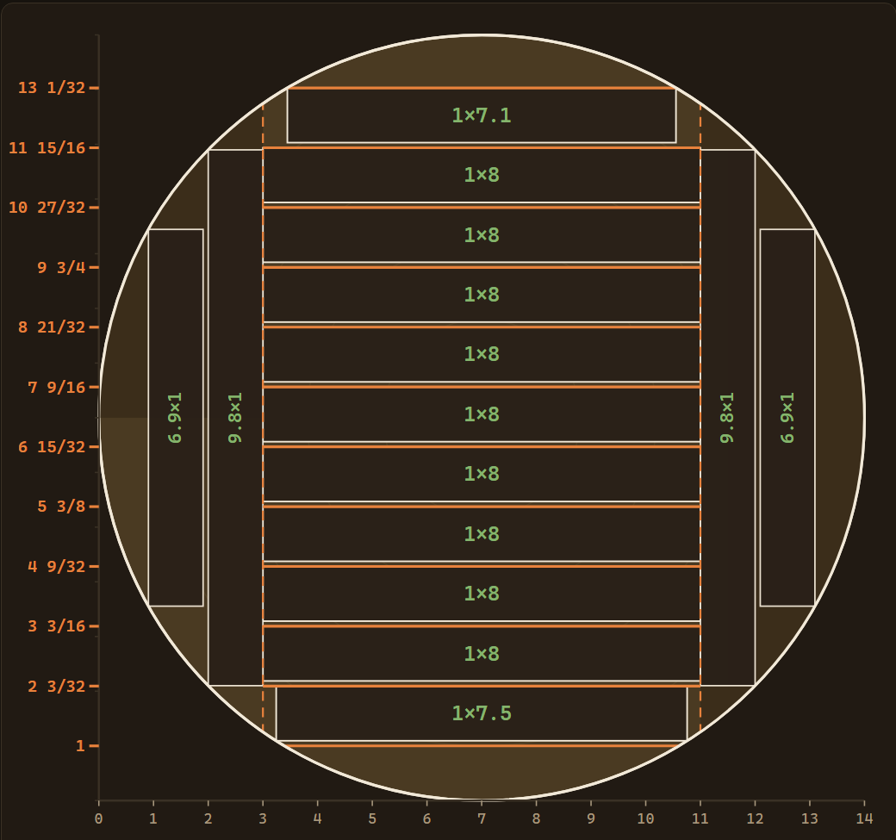

Precision sawmill cut plans
Planes de corte precisos para aserraderos
Know exactly where every cut lands — before the saw touches the log.
Sabe exactamente dónde entra cada corte — antes de que la sierra toque la troza.
LogCut Pro turns a log's diameter into an exact, kerf-accurate cutting guide: every saw position, every board width, every offcut accounted for — right on the mill floor, no signal required.
LogCut Pro convierte el diámetro de una troza en una guía de corte exacta, con el kerf ya descontado: cada posición de sierra, cada ancho de tabla, cada sobrante ya calculado — directo en el piso del aserradero, sin necesidad de señal.

Actual output from the LogCut Pro engine — 14″ log, 1″ boards, 3/32″ kerf, 8″ target width.
Resultado real del motor de LogCut Pro — troza de 14″, tablas de 1″, kerf de 3/32″, ancho objetivo de 8″.
Built around the way a mill actually cuts
Pensada para cómo se corta de verdad en el aserradero
Not a generic board-footage calculator — a guide built on the real four-step process: square, flip, rotate, fill.
No es una calculadora genérica de pie-tabla — es una guía basada en el proceso real de cuatro pasos: escuadrar, voltear, rotar y rellenar.
Kerf-accurate cut ladders
Escalera de cortes exacta con kerf
Every guide mark is an absolute saw position — not a running tally you have to add up in your head between cuts.
Cada marca de la guía es una posición absoluta de la sierra — no una suma que tengas que llevar en la cabeza entre corte y corte.
Best combination of widths
Mejor combinación de anchos
An exact solver — not a guess — finds the mix of standard board widths that uses the most of every slab.
Un solucionador exacto — no una aproximación — encuentra la combinación de anchos estándar que mejor aprovecha cada cachete.
Nothing above the line wasted
Nada se desperdicia arriba de la línea
Leftover cant above the last board is automatically filled with more boards, continuing the same guide.
El sobrante del canto arriba de la última tabla se rellena solo con más tablas, siguiendo la misma guía.
Compare widths side by side
Compara anchos uno junto a otro
See the yield for every candidate target width and pick the one that fits the log — the app never picks for you.
Ve el rendimiento de cada ancho objetivo candidato y elige el que mejor le quede a la troza — la app nunca decide por ti.
Inches or millimeters
Pulgadas o milímetros
Fractions down to 1/32″, or exact millimeters — same engine, your choice of units.
Fracciones hasta 1/32″, o milímetros exactos — mismo motor, tú eliges la unidad.
Works with no signal
Funciona sin señal
100% offline. No accounts, no cloud, no waiting on bars in the mill yard.
100% sin conexión. Sin cuentas, sin nube, sin esperar señal en el patio del aserradero.
How the plan is built
Cómo se arma el plan
Four steps, two axes — the same sequence a mill operator already follows by hand.
Cuatro pasos, dos ejes — la misma secuencia que un operario ya sigue a mano.
Square two sides
Escuadrar dos lados
Slab both faces down to your target width, flipping the log between cuts.
Se sacan los cachetes de ambos lados hasta el ancho objetivo, volteando la troza entre corte y corte.
Rotate 90°
Rotar 90°
Trim the remaining rounded faces down to a squared cant.
Se quita la cáscara de las caras redondeadas restantes hasta dejar un canto cuadrado.
Cut the center
Cortar el centro
Take boards — or resaw stock — from the squared cant at your chosen thickness.
Se sacan las tablas — o material para reaserradora — del canto cuadrado, en el grosor elegido.
Fill the leftover
Rellenar el sobrante
Any cant left above the last board is sliced into more boards automatically.
Lo que sobra del canto arriba de la última tabla se corta en más tablas de forma automática.
Currently testing with real sawmill operators
Actualmente en pruebas con operarios reales de aserradero
LogCut Pro isn't in an app store yet — it's being shaped directly by feedback from the mill floor. If you run a sawmill and want early access, reach out.
LogCut Pro todavía no está en una tienda de apps — se está afinando directamente con la retroalimentación del piso del aserradero. Si operas un aserradero y quieres acceso anticipado, escríbenos.